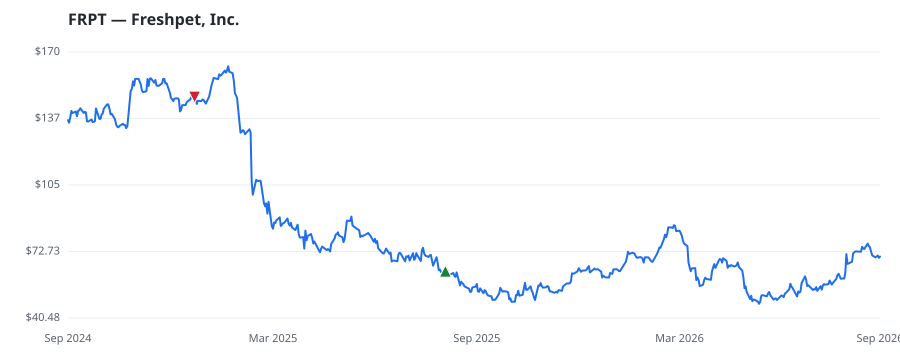

bullish · bearish · n/a — dots: price>SMA10 · SMA10>SMA50 · SMA50>SMA200 · up>down volume (20d)
Food, Beverage & Tobacco · mid cap
Members who bought FRPT earned a dollar-weighted +12.0% from their disclosure dates, versus +19.8% for the S&P 500 over the same holding windows (-7.8% alpha).

▲ green = a disclosed purchase · ▼ red = a disclosed sale (plotted on disclosure date)
Freshpet produces and sells premium fresh pet food through its company-owned refrigerators placed in grocery, mass and club, pet specialty, and natural stores. Freshpet primarily targets dogs (likely representing well north of 90% of sales), with cats and treats nascent contributors. Geographically, the company's home US market, where all its food is produced, accounts for nearly all of sales, with exports to Canada, the United Kingdom, and other European countries being very small contributors. GRAIN MILL PRODUCTS · website
| Revenue | $1.1B | Net income | $139.1M |
|---|---|---|---|
| Operating income | $75.7M | Diluted EPS | $2.64 |
| Assets | $1.8B | Equity | $1.2B |
| Member | Chamber | Out-performer | Disclosed buys $ | Return on buys |
|---|---|---|---|---|
| Markwayne Mullin | senate | yes | $16K | +12.0% |
Disclosed $ figures are bracket midpoints — filings report ranges (e.g. $1,001–$15,000), not exact amounts.
| Fund | Fund alpha vs SPY | Position | % of book |
|---|---|---|---|
| Militia Capital Partners, LP | +6% | $0M | 0.1% |
Hedge data: SEC EDGAR 13F · ranked funds beat SPY in >50% of their quarters · fund alpha = mirror-portfolio return minus SPY.